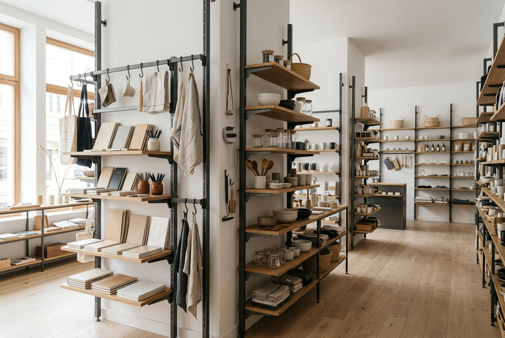
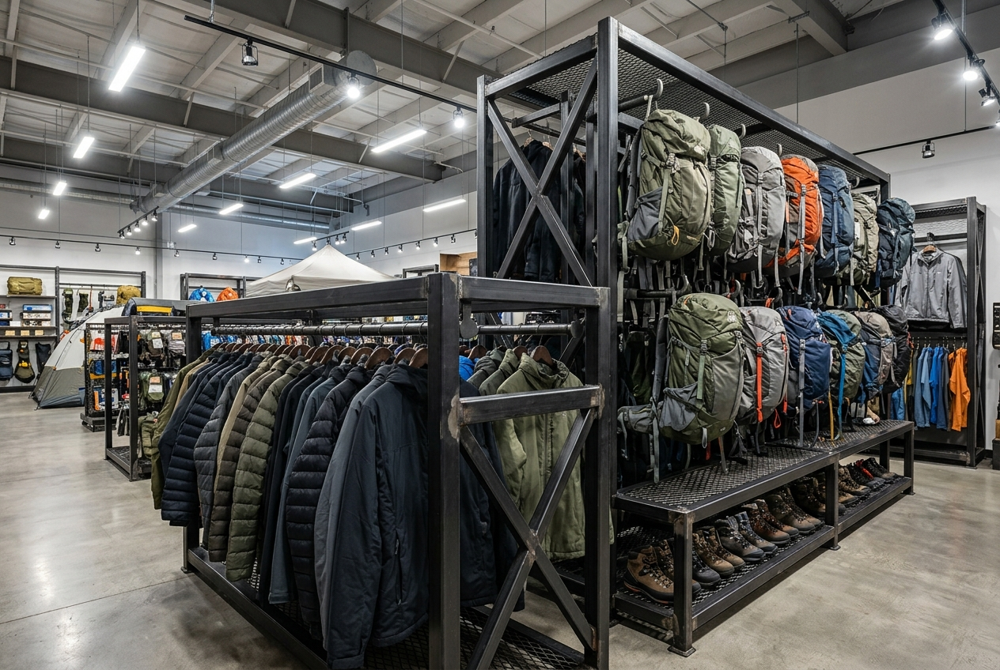
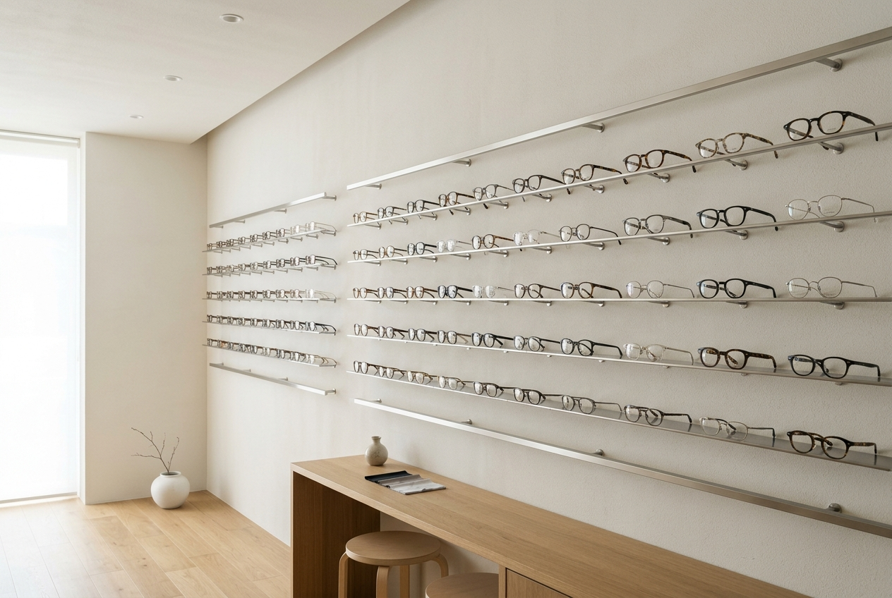
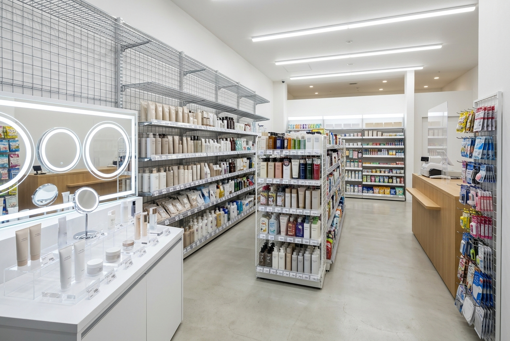
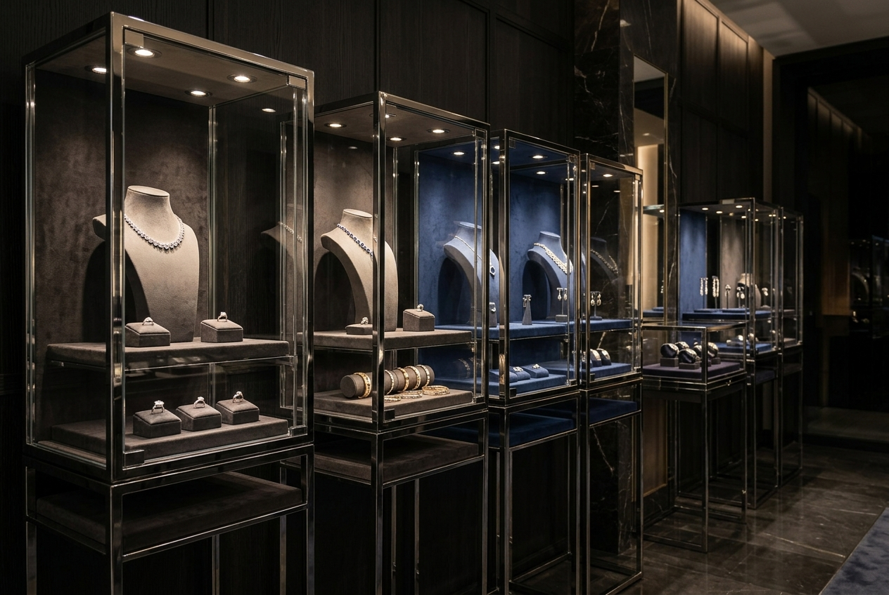
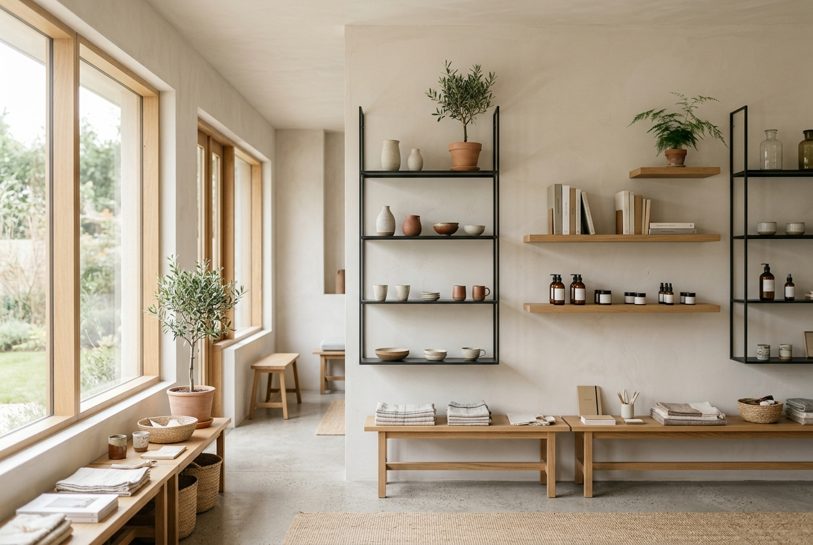
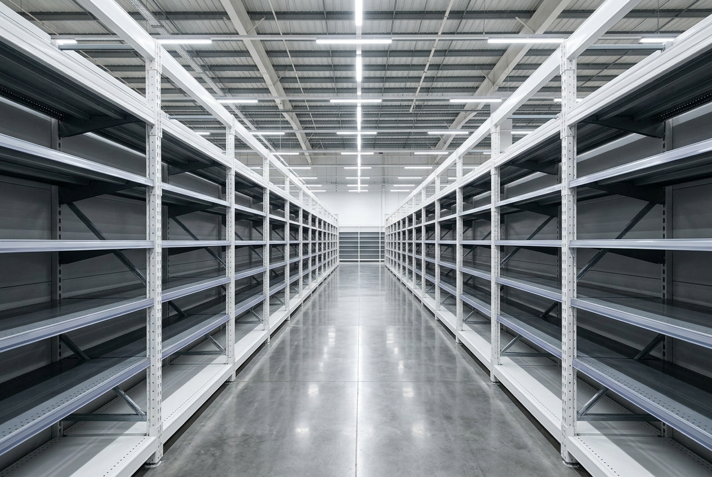
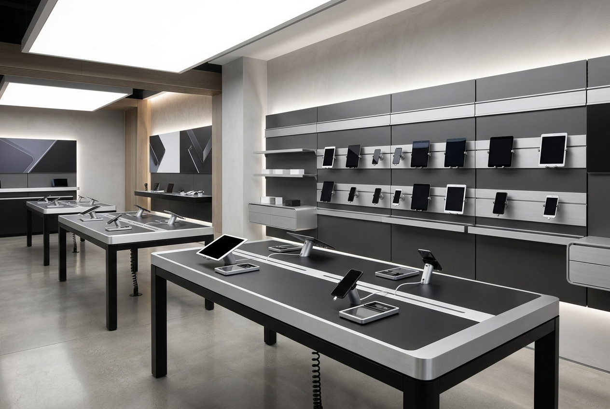

碧豐長期與日本、歐美及亞洲市場進行緊密配合，供給國際零售品牌與連鎖通路所需的各式店面展示產品。以下為各產業類別的對應方案。

商品涵蓋文具、廚具、美妝、生活雜貨等數萬個品項，品類跨度大，陳列道具需同時對應多種商品尺寸與重量。每週或每季的更檔頻率，使標準化固定層板難以滿足快速變換的需求。可拆式掛勾與活動層板系統，可在同一組骨架結構上調整陳列配置，減少換檔時重新採購與安裝的工時。

運動用品與戶外裝備如滑雪板、登山鞋、帳篷等，單品重量可達 5-20 公斤，且顧客每日重複拿取、試用。一般掛勾與層板在長期高荷重下易產生變形或鍍層磨損，影響商品陳列品質與店面專業感。高荷重金屬掛勾與層板系統，經由 FEA 結構優化設計，通過 120kg 抗歪斜測試，鍍層通過 1,000 小時鹽霧測試。

眼鏡鏡框店以高單價、低庫存量的商品為核心，顧客進店的核心行為是試戴體驗。陳列展示架需要在視覺上退到背景，讓商品成為焦點，同時兼顧防盜功能與長期使用的耐磨性。專屬防盜磁閥掛勾，搭配鏡面電鍍處理（96H 中性鹽霧測試），可同時滿足安全陳列與精緻質感的需求。

藥妝店與美妝選品店同時涉及多種陳列需求：帶燈試用化妝台的照明與鏡面整合、壁面層板的價格軌道配置、走道中島櫃的雙面取貨設計、end cap 促銷區的快速更換機制。這些道具涉及金屬、壓克力、玻璃、燈具等不同材質與製程，單一供應商統包可有效降低管理成本與規格不一致的風險。

精品首飾與飾品連鎖的展示櫃，本質上是品牌價值的延伸——金屬框的接縫精度、鍍層色澤的一致性、玻璃與金屬之間的密合度，直接影響顧客對商品品質的判斷。展示櫃的金屬加工需達到拋光電鍍等級，並整合低溫烤漆與珠寶燈光配置，以確保商品在最佳光線下呈現。

選品概念店與文化書店的商品尺寸多元、數量不大，但對陳列道具的視覺干擾要求極低——道具本身應退到背景，讓商品成為視覺主角。標準化大量生產的棚架系統不易滿足此類店型的客製化需求。極細線型層板支架、木質與金屬混搭的 Bespoke 設計，可針對不同商品尺寸彈性調整，並接受少量訂單。

超市與大賣場的棚架系統採購規模大，單次訂單可達數百組，每組的尺寸公差與塗裝一致性必須完全統一，否則現場安裝時會產生累積誤差。大規模採購同時需要穩定的供貨排程與品質管控。台北 PM 團隊統合多廠生產排程，彰化倉庫進行二次全檢，確保每批出貨的棚架尺寸與塗裝一致。

3C 與家電連鎖的展示體驗台需同時滿足多項功能：隱藏走線、商品防盜固定、模組化擴充，以及與品牌視覺語言一致的外觀設計。台面材質（鋁合金、強化玻璃、金屬框）的選擇與加工精度直接影響品牌給消費者的專業感受。異材質整合能力可同時處理金屬加工、陽極氧化、走線結構與防盜機制的統一設計。